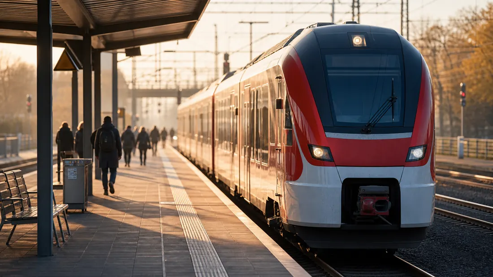
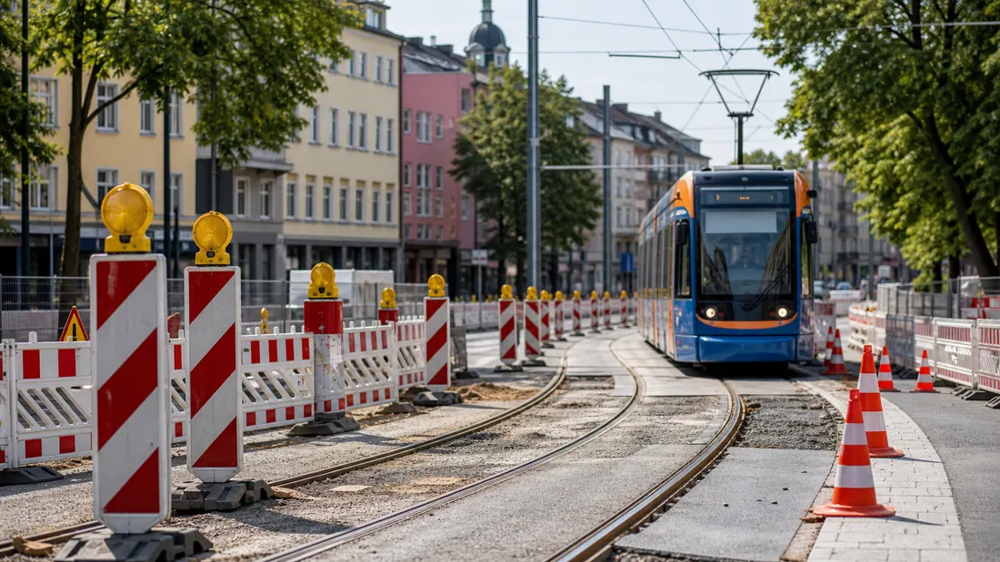
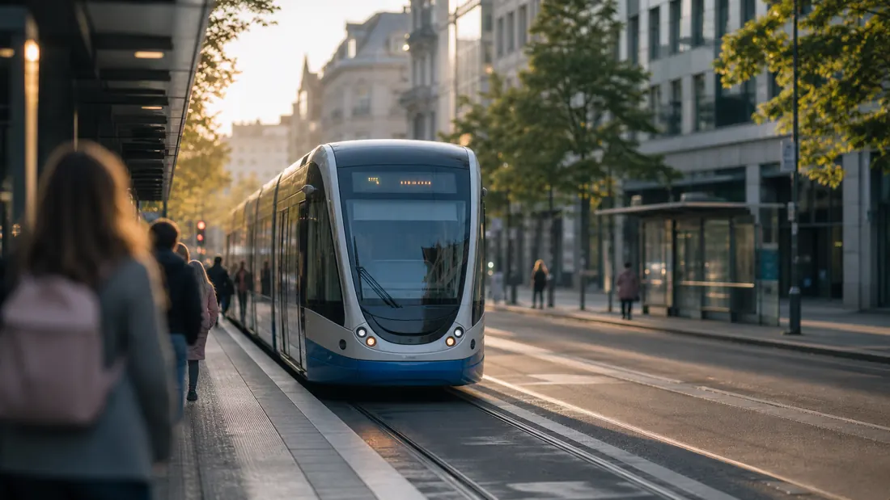

Frankfurt · Verkehr
40 Jahre "C-Strecke"
VGF und Museumsverein schicken zum Strecken-Jubiläum historische U-Bahn-Züge auf die Linien U6 und U7. Weitere Details, Hintergründe und vollständige Angaben stehen in der verlinkten Originalmeldung.

Hessen Aktuell
Straßen, Bahn, ÖPNV, Baustellen, Verkehr und Mobilität.
Topmeldung
Frankfurt · Verkehr
VGF und Museumsverein schicken zum Strecken-Jubiläum historische U-Bahn-Züge auf die Linien U6 und U7. Weitere Details, Hintergründe und vollständige Angaben stehen in der verlinkten Originalmeldung.
Meldungen

Frankfurt · Verkehr
Betrieb von U4 und U5 eingestellt - VGF setzt Ersatzbusse ein. Weitere Details, Hintergründe und vollständige Angaben stehen in der verlinkten Originalmeldung.

Frankfurt · Verkehr
Keine Nutzung mehr als Notunterkunft möglich. Weitere Details, Hintergründe und vollständige Angaben stehen in der verlinkten Originalmeldung.

Frankfurt · Verkehr
Straßenbahnlinien 11, 14 und 21 aufgrund von Gleis- und Weichenbauarbeiten im Frankfurter Westen nur eingeschränkt unterwegs.
Frankfurt · Verkehr
U-Bahn-Stationen "Niddapark" und "Römerstadt" werden barrierefrei Weitere Details, Hintergründe und vollständige Angaben stehen in der verlinkten Originalmeldung.
Frankfurt · Verkehr
Die Mainova-Netztochter NRM Netzdienste Rhein-Mein registrierte am Donnerstag, 25. Juni 2026, und am Freitag, 26. Juni, neue Spitzenwerte beim Stromverbrauch. Die Tageshöchstlast lag jeweils über 900 Megawatt.
Frankfurt · Verkehr
Der Fernwärme-Ausbau in der Frankenallee wird fortgesetzt. Weitere Details, Hintergründe und vollständige Angaben stehen in der verlinkten Originalmeldung.
Wiesbaden · Verkehr
Von Montag, 13. Juli, bis Freitag, 7. August, schließen die ELW (Entsorgungsbetriebe der Landeshauptstadt) eine im Jahr 2021 begonnene, durch den Umbau des Joho jedoch unterbrochene, Kanalbaumaßnahme ab.
Wiesbaden · Verkehr
Aufgrund einer Baumaßnahme ist der Hessenring am Samstag, 11. Juli, von 7 bis voraussichtlich 17 Uhr teilweise gesperrt.
Wiesbaden · Verkehr
Die Geschäftsstelle des Ausländer- und Seniorenbeirats, Friedrichstraße 32, ist urlaubsbedingt von Mittwoch, 8. Juli, bis einschließlich Sonntag, 19. Juli, geschlossen. Die Geschäftsstelle der Ortsbeiräte Innenstadt im Rathaus, Schlossplatz 6, ist urlaubsbedingt von Montag, 20. Juli, bis einschließlich Sonntag, 2.
Wiesbaden · Verkehr
Wiesbaden (ots) - 1. Mülltonne in Brand gesetzt, Wiesbaden-Bierstadt, Kanzelstraße, Mittwoch, 08.07.2026, 02:45 Uhr (kq)In der Nacht zum Mittwoch kam es in Wiesbaden-Bierstadt zu einem Brand einer Mülltonne, bei dem ein Sachschaden von mehreren ...
Darmstadt · Verkehr
Darmstadt (ots) - Zwischen Sonntag (5.7.) und Montag (6.7.), in der Zeit von 21.30 bis 9 Uhr, entwendeten bislang unbekannte Täter in der Pfungstädter Straße ein schwarz-silbernes Motorrad der Marke "KTM", Modell "Superduke" und flüchteten in ...
Darmstadt · Verkehr
Darmstadt (ots) - Am Samstagmorgen (4.7.) soll nach derzeitigen Erkenntnissen ein Fahrradfahrer in der Rheinstraße gegen 2.30 Uhr mit Reizgas verletzt worden sein. Aktuellen Ermittlungen zufolge befuhr er den Radweg und wurde auf Höhe der ...
Hessen · Verkehr
Kern des Programms ist die neue Erhaltungsinitiative mit rund 383 Millionen Euro für 333 prioritäre Sanierungsmaßnahmen, mit denen bis 2030 rund 450 Kilometer Landesstraßen erneuert werden sollen.
Hessen · Verkehr
Keynote von Wirtschaftsminister Kaweh Mansoori / Einblicke in die Entstehung des Berichts / Panel sowie Informationen über die Open Design Week und den WDC-Campus
Hessen · Verkehr
Mit einer Agenda für mehr Wettbewerbsfähigkeit hat sich Hessen auf der Wirtschaftsministerkonferenz in Konstanz für bessere Rahmenbedingungen für Unternehmen und Industrie eingesetzt.
Hessen · Verkehr
Hessen fördert Qualifizierung. Die Nutzung von Abwärme gewinnt für die zukünftige Wärmeversorgung zunehmend an Bedeutung.
Hessen · Verkehr
Kern des Programms ist die neue Erhaltungsinitiative mit rund 383 Millionen Euro für 333 prioritäre Sanierungsmaßnahmen, mit denen bis 2030 rund 450 Kilometer Landesstraßen erneuert werden sollen.